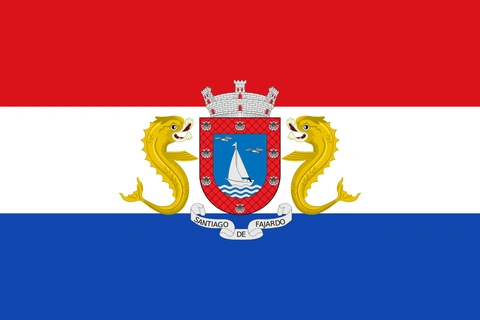
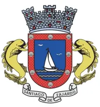

Nuestro Municipio
Fajardo se encuentra en el extremo este de Puerto Rico, a solo 45 minutos del aeropuerto Internacional Luis Muñoz Marín (SJU). Sus hermosas playas, sorprendentes reservas naturales, impresionantes marinas, elegantes hoteles y exquisita gastronomía hacen de esta ciudad el destino perfecto para vacacionar.
Fajardo es hogar de Laguna Grande, la bahía bioluminiscente más visitada de Puerto Rico, Marina Puerto del Rey, la marina más grande del Caribe y la Reserva Natural Cabezas de San Juan, dedicada a la conservación de ecosistemas.
Los invitamos a conocer, descubrir y disfrutar todos los ofrecimientos y servicios gubernamentales de excelencia que Fajardo tiene para ti. ¡Te esperamos!
Personas Ilustres
- Antonio Valero de Bernabé (1790 - 1863): General | Libertador | Defensor de la Independencia de España
- Eugenio Benítez Castaño (1878 - 1918): Insigne Abogado | Escritor Puertorriqueño
- Antonio R. Barceló (1868 - 1938): Primer Presidente del Senado de Puerto Rico
- Isabel Andreu de Aguilar (1897 - 1948): Educadora | Política | Sufragista | Líder Cívica Puertorriqueña
- Emilio S. Belaval (1903 - 1972): Escritor | Ensayista | Juez | Dramaturgo | Cuentista | Periodista
- Carmelina Vizcarrondo (1906 - 1983): Escritora y Poetisa
- Dra. Antonia Coello Novello (1944 - Presente): Parte del libro 100 mujeres americanas que cambiaron el mundo
Bandera y Escudo

De tipo rectangular, tricolor, compuesta de tres franjas. La primera superior de gules (rojo) simbolizando el color de la bordura del escudo. La segunda de centro de blanco (plata) simbolizando el color de las piezas principales que aparecen en blasón y su corona. La tercera inferior de azul simbolizando el color del cielo y el mar de Fajardo. Al centro el escudo oficial de la Villa en sus colores naturales.
Blasón de forma cuadrilonga, redondeado en su forma inferior y timbrado de corona mural de tres piezas (torres). Trae por soportes, dos delfines y debajo de la base un volante con una inscripción SANTIAGO DE FAJARDO. El azul representa el color del cielo y el mar en Puerto Rico y en heráldica simboliza el zafiro y su significado es: justicia, vigilancia, recreación, celo y lealtad de sus ciudadanos. El plata se manifiesta también por el color blanco y simboliza a la perla.
